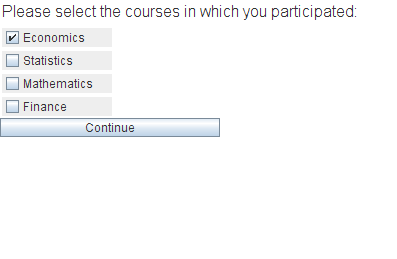

checkbox(varname,text)
Displays a checkbox which the subject can click. By default the checkbox is not selected. When the checkbox is selected by the user
the given variable will be set to 1.
Note: When the checkbox is not clicked, the corresponding variable may not be defined. This is not a problem as undefined variables are
treated as 0 in the BoXS either way. However, it may lead to confusion when not kept in mind.
Parameters
| varname | The name of the variable in which the result is stored. |
| text | The text which is shown next to the checkbox. |
See also
choice
Examples

|

|